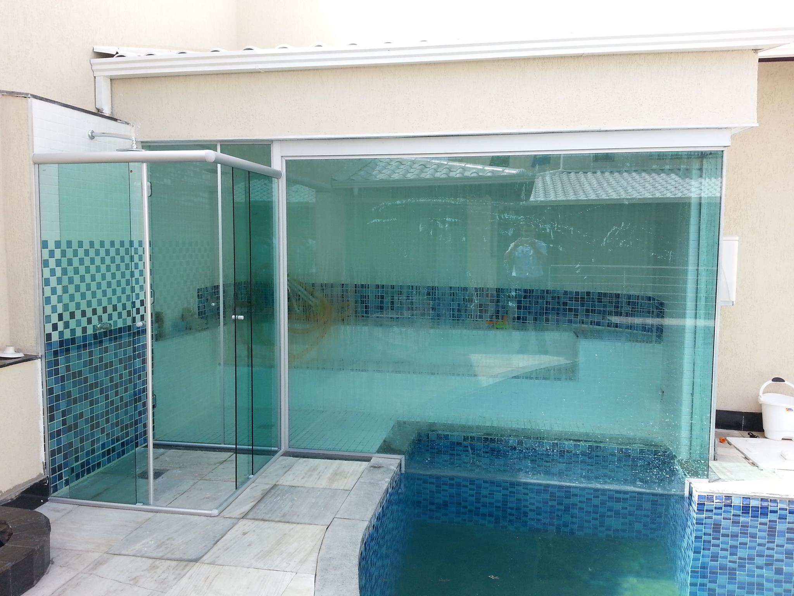

Clique sobre as áreas destacadas em vermelho

As paredes decorativas e muros produzidos em vidro temperado Blindex® atendem às diversas necessidades do ponto de vista de segurança e estética
Tendência no universo da arquitetura e decoração. Capazes de agregar leveza, transparência e sofisticação elevando o ambiente a um espaço clean e moderno, alem de proporcionar segurança nas escadas.
Tendência no universo da arquitetura e decoração. Capazes de agregar leveza, transparência e sofisticação elevando o ambiente a um espaço clean e moderno.

Proporcionando ganho de espaço no ambiente, o modelo ainda da um toque todo especial devido seus mais variados modelos.
Produzido em vidro temperado nos mais variados modelos (incolor, coloridos, serigrafados...), podem ser montados com kit em alumínio ou em aço inox.
A Janela de vidro temperado é um modelo muito utilizado e pode ser de correr com duas folhas, sendo uma fixa e outra móvel, ou duas folhas móveis, ou quatro folhas com duas fixas e duas móveis além de outros modelos. O uso do vidro temperado traz segurança, qualidade, garantia, elegância e sofisticação.